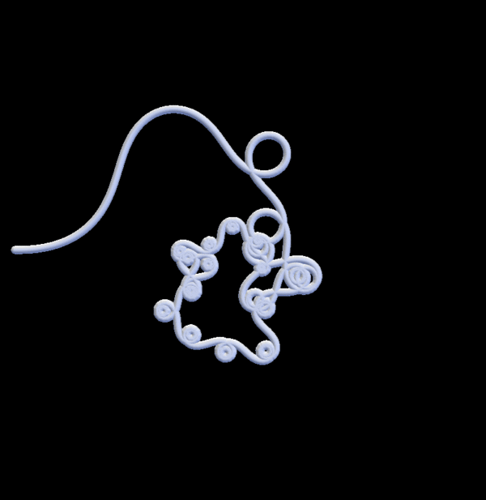
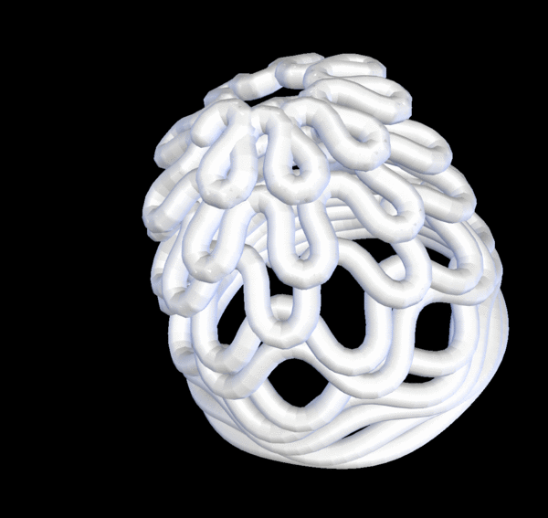
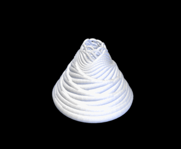

My work over the last year has centered around a simple idea. If you take a sine wave and treat it like a series of segments, or joints, where each segment is hierarchically parented to the previous joint some interesting phenomena occur. Passing a regular sine wave down the joint chain can generate the typical wave pattern that we're all familiar with. However, adjusting the parameters slightly begins to create much more complex shapes such as looping spirals and lacy filigree.
To get a sense of why this happens let's step back to a simpler example. This is a joint chain laid out in a line. If we bend all the joints an equal amount, it will twist around and become a circle.
A duplication, mirroring, and extending reveals lines reminiscent of magnetic fields.
If the joint chain scales as it rotates (each subsequent joint becomes slightly smaller) then spirals emerge.
Each joint has a number identifying its place in the chain. The first joint is 1, the second is 2 and so forth. This number can be used as a variable to control a sine wave - the formula for this image is something like: rotate = sin(joint.number);
In this example the frequency of the sine wave is actually slowed down: rotate = sin(joint.numer/10); Because the joints are parented hierarchically the lower frequency doesn't result in a longer wave but rather a wave that loops back on itself.
An even more extreme example.
Things start to get interesting when I increase the amplitude based on the joint number : rotate = sin(joint.number)*joint.number
If this were a tone that was being played the frequency and volume would be increasing. When applied to the hierarchical sine wave the results become fractal like, meaning that patterns repeat across the wave at different scales as phase patterns emerge.
  
The reason that the joint chain with a sine wave applied creates such unusual shapes is that unlike a regular sin wave, the hierarchical sin wave will continue twisting around until it loops back on itself, producing spirals which alternate directions. As these joint chains are three dimensional they can rotate in different ways on different axis to produce even more interesting results.
.